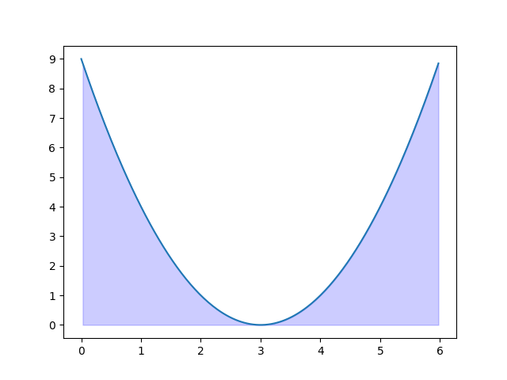

Welcome! Your seating code is |
| 1. | Teresa has exactly $20 to buy beer. One beer costs $3.75. How many complete cans of beer can Teresa buy? |
| 2. | In 2022, Dorian is 15 years old, and his friend is 17 years old. Sara uses the Waverider to time travel to a future point in time, where Dorian's friend is 35 years old. How old is Dorian at this future point, assuming neither Dorian or his friend have done any time travel and both are still alive? |
| 3. | Agnes is bartering with Paul to make hot pot. She is able to trade 4 napa cabbages for 2 daikon, and 1 diakon for 4 crab legs. She has 12 napa cabbages. How many crab legs can she get for hot pot? |
| 4. | An evil villain has trapped you in a dungeon to stall you, while he executes his plan to take over the world. The only way to escape the dungeon is to go through a sequence of doors. Each door has a coin slot that accepts dimes, nickels, and pennies, and can be unlocked by putting exactly 25 cents into the coin slot. Each door is programmed to accepts only a specific breakdown of dimes, nickels, and pennies however. For example, one combination is 2 dimes and 1 nickel, inserted in any order. The villain has installed the maximum number of doors to stall you, and each door accepts a unique combination of dimes, nickels, and pennies. How many doors do you need to unlock to escape? |
| 5. | Your roommate bought a 20-inch square pizza for $20 and 6 breadsticks for $6, to be shared with you, your roommate, and 3 other people. You ate 1/4 the pizza and 3 breadsticks. If your group is splitting the costs in proportion to how much you ate, how much do you owe your roommate? |
| 6. | You and your friend have just joined a stormtrooper patrol, and need to rent 2 blasters for 3 hours. Normally, each blaster costs $20 per hour, but the local armory has a deal offering a 20% discount for the first two hours. How much does the rental cost? |
| 7. | Jim has programmed an observer drone to fly back and forth to gather information on the movements of the nearby Terran garrison. It turns out that the farthest distance that his observer traveled from his home base is given by the expression
d = -1 + 3 - 5 + 7 - 9 + ... + 47 - 49 + 51 What is the value of d? |
| 8. |
The equation
x2 - 107x + 412 = 0 has two solutions for the value of x. What is the larger of the two solutions? |
| 9. | Let A be the area of the largest circle that can completely fit inside a equilateral triangle with side length of $30. What is the value of A/π? |
| 10. | Ana is making a sandwich with two slices of bread (chosen from wheat, brioche, and rye), and filled with at least one of roast beef, egg, and cheese. If the sandwich can have one or two types of bread, and the order of ingredients does not matter, how many different sandwiches can Ana make? |
| 11. | Of all the integers from 1 to 250 (including both 1 and 250), how many are divisible by either 6 or 10, but not both? |
| 12. | You are rolling a pair of fair 6-sided dice 1200 times. What is the expected number of times the sum of the two dice will either be a 4 or a 7? |
| 13. | You are fueling up your starship for a business
trip from your home base to the Maw installation.
The cost of fuel depends on the distance you travel.
Due to the large number of black holes at your
destination, the cost of fuel to travel one parsec
is higher the farther you are from home
(and thus closer to the Maw). More specifically,
the total cost to travel (in both directions)
between parsec n-1 and
parsec n is 3n + 2n. If your home base is at parsec 0 and the Maw is at parsec 10, how much does your fuel cost for a trip to the Maw and back? |
| 14. | You have decided to start training for a 5-mile run in your backyard, and dedicated a rectangular area for training. To walk a mile (1760 yards), you have determined that you can either walk along the longer length of the rectangle 80 times, or walk around the perimeter of the rectangle 22 times. What is the area of the training area in square yards? |
| 15. | As an aspiring necromancer, you are in the market for a new wand, and have been gambling with Gheed. You have done the calculations and determined the chance of getting a wand with the attributes you want is p, where p is the probability of rolling 3 fair 20-sided dice (with faces numbered with the integers from 1 to 20) and having the sum of the faces be exactly 5. If you gamble 100000 times, what is the expected number of wands you will get with the desired attributes? |
| 16. | What is the radius of the circle inscribed in a rhombus with diagonals of length 130 and 312? |
| 17. | Let f(x) be a function with two properties:
|
| 18. | Consider a right triangle with sides of length a, b and 13. If a+b = 17, what is the area of this triangle? |
| 19. | Teresa is scouting spots for a new Terran base,
and has found a candidate region which is a
rectangular area which is 6 miles by 9 miles. The
only problem with this spot is a Zerg infestation
along one edge of the region. The infested region
can be defined as the shaded region under the
parabola
y = (x-3)2 as shown in this diagram: What is the area of the infested region in square miles? |
| 20. | Consider the following method for encoding positive integers.
|
| 21. | A piece of graph paper is folded once, so that (0, 2) is matched with (4, 0). Let (m, n) be the point that is matched to the point (8, 4). What is the value of 10(m+n)? |
| 22. | Let f(x) = |x - 12| + |x - 22| + |x - 32| + ... + |x - 112|. What is value of x that minimizes f(x)? |
| 23. | Jim has a wooden cube which is painted red on the outside. He cuts the cube into 1000 identical cubes, some of which have some sides painted red. Jim then rolls the 1000 cubes like dice. Assuming each of the dice is fair, the probability that no red faces show up after Jim rolls the 1000 cubes can be expressed as 2-a · 3-b · 5-c, where a, b, and c are integers. What is the value of a+b+c? |
| 24. | Consider a triangular array of numbers, where the nth row has n numbers f{n, 1}, f{n, 2}, ... f{n, n}, defined according to the following recurrence:
For example, row 1 is {0}, row 1 is {1, 1}, row 2 is {2, 2, 2}, and row 3 is {3, 4, 4, 3}. Let gn be the sum of the nth row, i.e., What is the remainder when g100 is divided by 100? |
| 25. | Nine cards are numbered from 1, 2, ... 9 respectively. Three players are playing a cooperative game, where in each round of the game, they first randomly mix up the order of the cards, then give the first 3 cards to player 1, the next three cards to player 2, and the last three cards to player 3. The players win the round if all three players have an odd sum on their cards. Let the probability the players win a round be m/n, where m and n are relatively prime positive integers. What is m + n? |
| 26. | Jim and Teresa take a lunch break each day. They
each enter the kitchen independently, at a randomly chosen time
between noon and 1 pm, and stays and eats for exactly m
minutes. The probability that either one arrives while the other is
in the kitchen eating is 40%. The value of m can be written
as
m=a - b√c where a, b, and c are positive integers, and c is not divisible by the square of any prime. What is the value of a+b+c? |
| 27. | Let xn and yn be defined by the matrix equation
If x0=120 and y0=682, and what is the value of Z? |